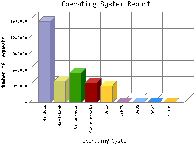

Analog 5.24
Analog 5.24 Report Magic for Analog 2.13
Report Magic for Analog 2.13The Operating System Report lists the operating system your visitors are running for visitors whose browser types you know. Not all browsers provide this information and not all visitors provide browser information, but what is provided, is summarized here.
This report is sorted by number of requests.

| Operating System | Number of requests | |
|---|---|---|
| 1. | Windows | 1,596,271 |
| Windows NT | 736,276 | |
| Unknown Windows | 579,208 | |
| Windows XP | 264,182 | |
| Windows 95 | 2,238 | |
| Windows CE | 437 | |
| Windows 98 | 2,415 | |
| Windows 2000 | 9,685 | |
| Windows 3.1 | 389 | |
| Windows ME | 1,441 | |
| 2. | Macintosh | 424,324 |
| Unknown Macintosh | 412,307 | |
| Macintosh PowerPC | 3,347 | |
| Macintosh 68k | 8,670 | |
| 3. | OS unknown | 590,182 |
| 4. | Known robots | 391,919 |
| 5. | Unix | 337,757 |
| Linux | 331,223 | |
| SunOS | 22 | |
| BSD | 311 | |
| Other Unix | 6,198 | |
| HP-UX | 3 | |
| 6. | WebTV | 16 |
| 7. | BeOS | 13 |
| 8. | OS/2 | 217 |
| 9. | Amiga | 7 |
This report was generated on January 22, 2026 01:58.
Report time frame December 19, 2013 00:28 to October 14, 2020 09:11.
| Web statistics report produced by: | |
| Analog 5.24 | Report Magic for Analog 2.13 |